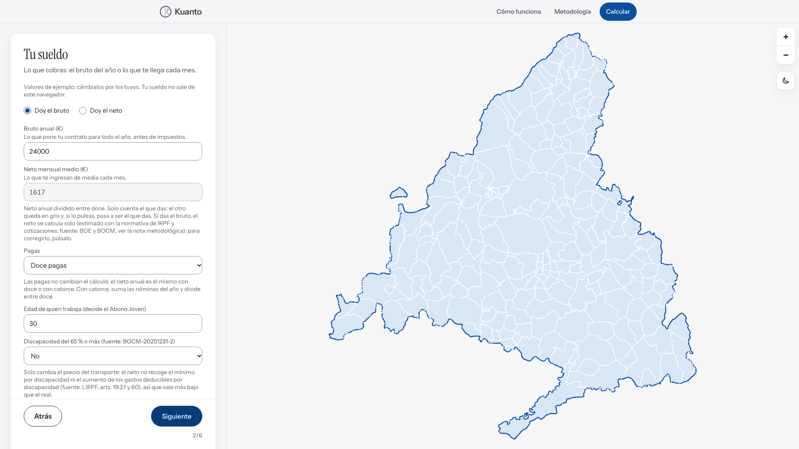
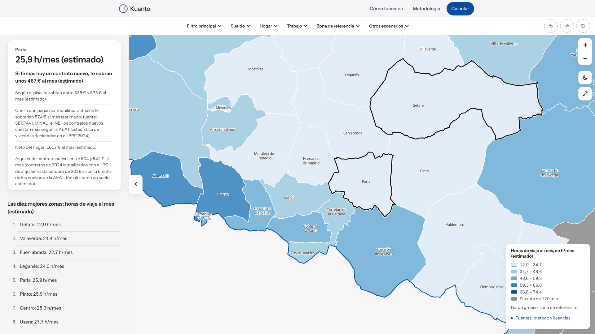
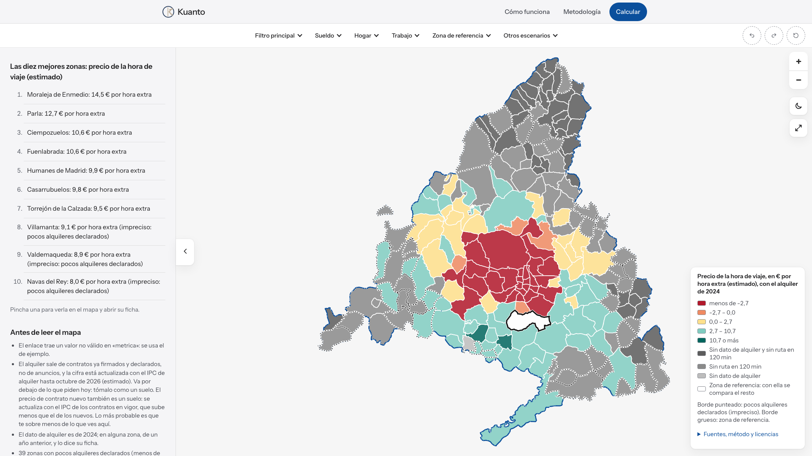

Una ciudad es muchas cosas.
Y vivir en ella se ha convertido
en una cuenta que no sale.
19,6 %
del ingreso neto de un hogar de la ciudad de Madrid se va en el alquiler mediano.
En 68 de 142 zonas, ese peso ha subido desde 2015.
Fuente: SERPAVI (MIVAU) y Atlas de Distribución de Renta de los Hogares (INE), 2015 y 2024. Elaboración propia.
Creemos que nadie debería descubrir demasiado tarde que su casa cuesta más de lo que parecía.
Creemos que el tiempo que pasas en un tren también es un precio.
Y que una decisión así merece algo más que un presentimiento.
Merece una respuesta.
Kuanto
Cuánto te sobra al mes, zona a zona.
Pongamos que se llama
Lucía.
- 30 años, vive sola
- 24.000 € brutos al año
- Trabaja en Getafe, cinco días a la semana
¿Dónde le sobra más dinero a final de mes?
Caso de ejemplo de la herramienta (docs/como-funciona.md). Fuente: cálculo de Kuanto, estimado.
Vamos a verlo en directo.
Kuanto, en el navegador. Sin registro. Tu sueldo no sale de tu equipo.
Seis tarjetas: hogar, sueldo, trabajo y escenarios.

Lo que le sobra a Lucía, zona a zona.

Parla: más dinero, más horas.

¿Cuánto vale cada hora de tren?

El piso más barato no es el que más te deja.
Getafe
Parla
Madrid, Centro
176 € más al mes en Parla. A cambio de 14 horas más de tren. ¿Te compensa?
Lucía, 30 años, 24.000 € brutos, trabaja en Getafe. Lo que sobra tras neto, alquiler mediano, abono y cesta. Fuente: Kuanto (docs/como-funciona.md), estimado.
Otros miran el alquiler. Kuanto hace la cuenta entera.
Lo que se suele calcular
- Alquiler
- Tiempo de viaje
- Sueldo neto
- Transporte
- Cesta
- Hogar
- Tu trabajo
Lo que calcula Kuanto
- Alquilercontratos declarados, con horquilla
- Tiempo de viajehorarios reales del CRTM, en euros de tu hora
- Sueldo netoIRPF y cotizaciones de 2026, del BOE
- Transporteel abono más barato para ti
- Cestagasto básico por ingresos (EPF)
- Hogarsolo, pareja, hijos, segundo sueldo
- Tu trabajodesde donde trabajas tú
Fuente: nota metodológica de Kuanto (app/metodologia.html).
Mirar solo el alquiler engaña.
Chamartín
de alquiler mediano. Pesa el 16,0 % de la renta.
Centro
de alquiler mediano. Pesa el 24,0 % de la renta.
El piso caro pesa menos porque allí se gana un 78 % más.
Fuente: SERPAVI (MIVAU) y ADRH (INE), 2024. Elaboración propia.
Vivir lejos solo compensa en 1 de cada 7 casos.
Con el sueldo mínimo, lo que ahorras en alquiler por vivir lejos solo paga las horas de tren en 1 de cada 7 combinaciones de casa y trabajo.
1.218 de 8.620 pares de zona de casa y de trabajo (14,1 %). Fuente: Kuanto, analisis.json, estimado.
El Bono Alquiler Joven no llega más donde más cuesta vivir.
Y cuánto se acepta no depende de lo que pesa el alquiler (p = 0,82).
Con el sueldo mínimo, 16 municipios quedan fuera del tope del Bono. 14, por menos de 80 €.
Fuente: catálogo de datos abiertos de la Comunidad de Madrid (Bono Alquiler Joven 2022); modelo y simulación de Kuanto, estimado.
2027: la subida que nadie ha anunciado.
+33 €
al mes por adulto, como mucho, si el descuento del abono termina con 2026. Desde 9 € en la zona A. Lo sabemos zona a zona.
De 9,23 a 32,76 €/mes según la zona; 9,30 € con el Abono Joven. Fuente: BOCM-20251231-2 y -3, RDL 17/2025; simulación de Kuanto, estimado.
Se lo preguntamos a ChatGPT y a Gemini.
Los asistentes
zonas miradas. Erraron el sueldo neto un 2,1 % y un 3,9 %, y cada uno puso un municipio en la zona de abono que no era.
Kuanto
zonas con cifra para esos perfiles, con el neto de la ley y las horas junto al dinero.
Prueba del 25-11-2026 con cuatro respuestas: ilustra, no mide. Fuente: docs/kuanto-frente-a-ia.md.
Fuentes oficiales. Cada una, con su huella.
89
descargas registradas con su SHA-256. Si cambia un byte, lo sabemos.
INE, CRTM, BOCM, catálogo de la Comunidad de Madrid, BOE, AEAT, MIVAU y otros. Fuente: data/README.md.
Cada cifra se puede seguir hasta su origen.
lo que le sobra a Lucía en Parla
neto − alquiler − abono − cesta, en tu navegador
contratos declarados, IPC y brecha de los contratos nuevos (AEAT)
sha256 f00ca4d7f27d23f8 11b229d97e65e385Ministerio de Vivienda, descargado el 15-11-2026
Y si alguien publica una cifra sin fuente, la integración continua la rechaza.
Fuente: data/README.md, app/datos/alquiler.json y .github/scripts/cifras_con_fuente.py.
Tres personas. Un equipo de agentes que no deja pasar una cifra sin fuente.
Fuente: .claude/ y .github/ del repositorio; AGENTS.md.
Quince días. Cada cambio, revisado.
Fuente: GitHub (pull requests fusionados del 11 al 25 de noviembre), pytest y docs/decisiones.md.
Tu sueldo nunca sale de tu móvil.
- Sin servidor ni base de datosla cuenta se hace en tu navegador
- Sin cuentas, sin registronadie sabe quién eres ni cuánto ganas
- Sin cookies de seguimiento ni analíticasolo recuerda si prefieres el tema claro u oscuro
- El navegador solo habla con Kuantopolítica de seguridad de contenido «self»; funciona sin red
Fuente: app/index.html (Content-Security-Policy) y nota metodológica.
Hecho para conectarse. Y para durar.
Fuente: app/datos/sdm, app/datos/dcat.jsonld, src/mesobra/mcp_servidor.py y nota metodológica (Mantenimiento).
Lo que DataMad pide, cumplido.
- Datos de la Comunidad de Madridcatálogo regional dentro del cálculo: cesta (EPF), Bono Alquiler Joven, población, empleo y redes del CRTM
- Viabilidad técnicaweb estática que se regenera con un comando y se mantiene con un calendario
- Viabilidad comercialpara quien busca piso y para Vivienda, Transporte, Juventud y ayuntamientos
- Código abiertorepositorio público, licencias abiertas y datos reutilizables
- Valor socialocho recomendaciones a la Administración, ordenadas por la solidez de la prueba
Criterios de la formación oficial de DataMad y de las convocatorias publicadas por la Comunidad de Madrid; las bases completas no se han publicado.
Nadie debería descubrir demasiado tarde
cuánto le cuesta su casa.
Kuanto
Yeray · Alex · Izan
Anexo · Las fuentes, por publicador
| Publicador | Descargas | Qué aporta | Licencia |
|---|---|---|---|
| INE | 23 | Renta (ADRH), población, secciones, ECV, coste laboral, IPC, matriz casa-trabajo | CC BY 4.0 |
| CRTM | 13 | GTFS de Metro, Metro Ligero, Cercanías, EMT e interurbanos; coronas; fichas de títulos | Licencia del CRTM |
| BOCM | 13 | Tarifas de 2026 y de 2013, Bono Alquiler Joven, fiestas laborales | Norma pública |
| Catálogo de la Comunidad de Madrid | 12 | EPF (cesta), Bono 2022, población por edad, colectivo empresarial, indicador de renta | CC BY 4.0 |
| BOE | 9 | IRPF, cotizaciones, SMI, IPREM, RDL 17/2025, Estatuto de los Trabajadores | Norma pública |
| AEAT | 7 | Viviendas declaradas en el IRPF: brecha de los contratos nuevos | Aviso legal AEAT |
| MIVAU | 5 | SERPAVI: alquiler de contratos declarados, 2011-2024 | Citando la fuente |
| Otros | 7 | Comisión Europea, Natural Earth, Instituto de Estadística de la Comunidad, Renfe, OpenStreetMap | Según fuente; OSM, ODbL |
Descartadas por licencia o método: Idealista, Fotocasa, fianzas. Fuente: data/README.md y docs/decisiones.md.
Anexo · Método y validación
- Neto. IRPF estatal y de Madrid y cotizaciones de 2026; 8 casos completos calculados a mano, de 17.094 a 80.000 €; la interpolación se separa menos de 1 €/mes.
- Tiempos. r5py sobre los GTFS del CRTM; horarios reconstruidos en el 21,5 % de los pares con ruta, error medio de 20,7 minutos en 494 viajes.
- Alquiler. Mediana de contratos declarados; zonas con menos de 70 alquileres marcadas como imprecisas (39 de 158); horquilla P25–P75.
- Incertidumbre. IC del 95 % de la mediana por estadísticos de orden; con 142 contrastes, unas 7 zonas saldrían claras por azar, y lo decimos.
- Espacial. I de Moran y LISA; Bayes empírico para tasas de zonas pequeñas.
- Bono. GLM binomial negativa con offset y SEM espacial; 9 especificaciones publicadas, también las que no salen significativas.
- Registro previo. El criterio se fija antes de ver el resultado; si se cambia después, se declara.
- Lo que falta en gris. Una zona sin dato nunca sale como cero.
Fuente: app/metodologia.html, docs/informe/cifras.md y docs/decisiones.md.
Anexo · Cómo trabajan los agentes
- El ciclo. Issue → rama y worktree → skill del área → ruff y tests en cada edición → commit → revisor del área → PR → CI → merge.
- Revisores. Abogado del diablo, auditor de cálculos normativos, revisor de código, de diseño, espacial y de seguridad, trazador de cifras y verificador de fuentes.
- Lo que no puede fallar es una máquina. Hooks que dejan los datos originales en solo lectura; la CI exige el veredicto del revisor sobre el último commit.
- Cifras con fuente. Cada número público lleva su fuente y «estimado» si sale de un modelo; un script lo comprueba en cada PR.
- Decisiones. Cada elección de fuente, método o umbral queda fechada, con su porqué y quién la tomó.
- Humanos. Deciden, aprueban cambios en las reglas y responden las dudas reales.
Fuente: AGENTS.md, .claude/README.md y .github/workflows.